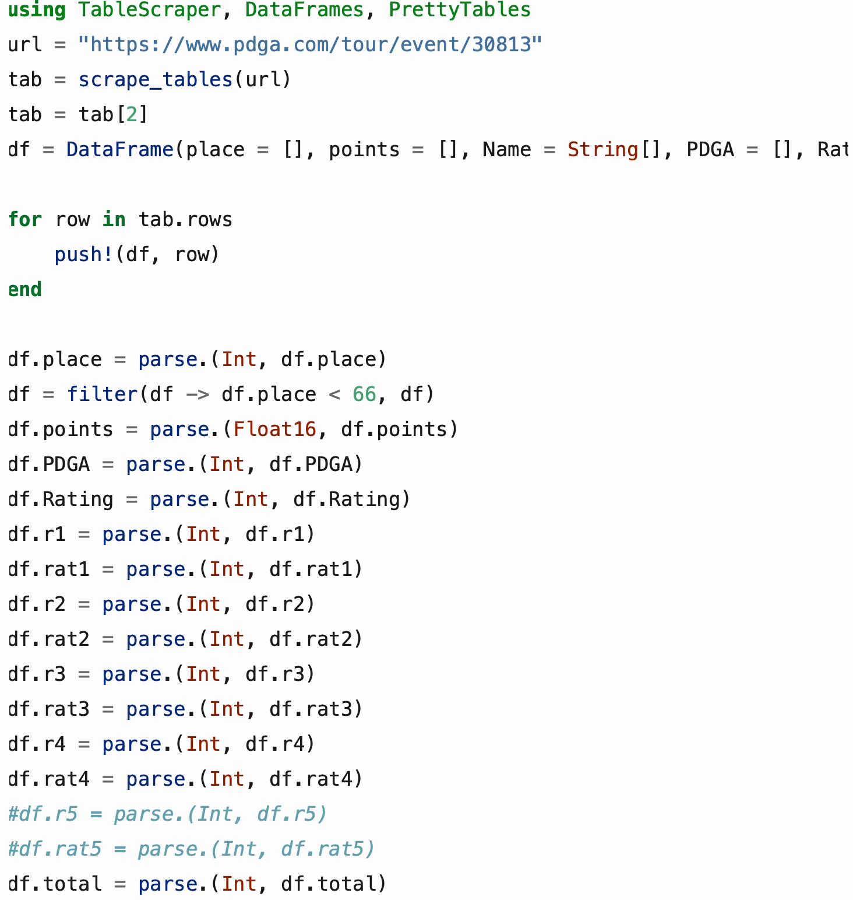
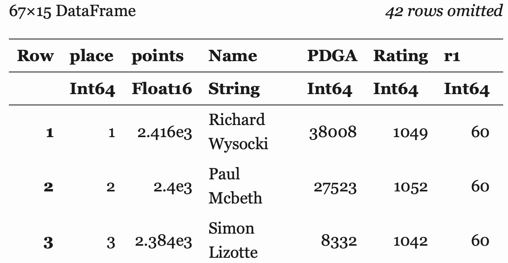
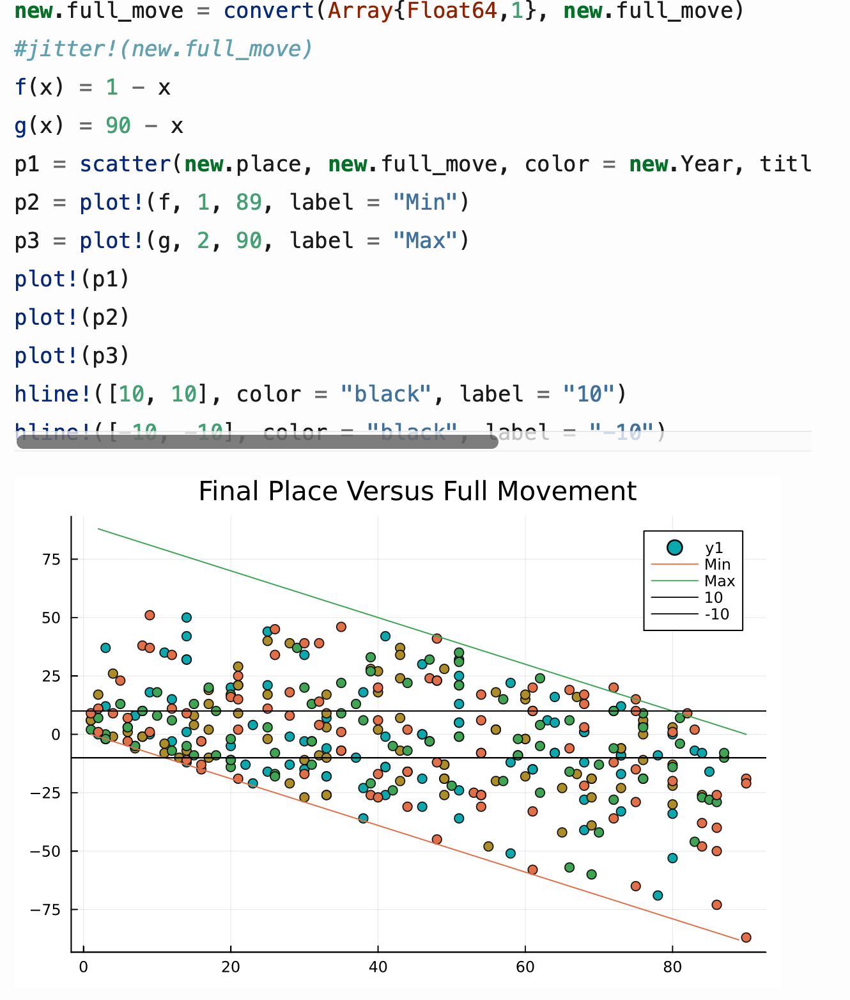

Introducing Myself to Julia
The most important outcome of this project is learning Julia to the point that I would be comfortable using the language for anything from analysis to machine learning to draw insights from a set of data. Along with this, however, I also wanted to see what insights could be drawn when techniques of data analysis were applied to one of my passions that is seemingly new to the wonders of data science: disc golf.
One of the things that I found early on was that the data collected and available was limited, but there did exist the capability to get the data that I needed for one of my ideas of analysis. In golf, and disc golf, the events from the pro tour are played in multiple rounds. The second to last round is sometimes referred to as "moving day". The concept behind this term is that a player with aspirations of winning the event would be within striking distance of the lead by the end of this round. Thus, the player moves themselves into a position where they can exert more effort in the final round and find a move for the top possible. Some would argue, however, that this concept is flawed and that the standings are not maleable enough by the final round to allow for such a concept. It offers the question—how much movement in the standings is there through the course of an event? And is such a move for a top spot feasible if not in a top spot at the beginning of the final round?
Table Scraping and Initial Data Prep
These questions can be answered as we look at round-to-round data from an event. The event that I will look at is arguably the most coveted event from the PDGA tour—the PDGA World Championships. The data needed to analyze this event by round is not readily available to be read except through a bit of scraping. An example of the page that will be scraped can be seen here.
The package use for scrpaing is from the package TableScraper.jl. The tables scraped from this package are saved as an array of arrays. Selecting the array that we want, we can then push the data to a dataframe (so long as the created dataframe is the same size of the arrays within our array) and parse desired data into Int and Float types.
A sample of the output is seen below (limited columns shown).
Data Manipulation
Now that the data from the PDGA is scraped and stored in a dataframe, it is ready to be manipulated. Manipulating the data makes use of exclamation points to apply a function changes the content of the data that is inputted. For example, the line "transform!(file1, [:r1, :r2, :r3, :r4] => (+) => :through4)" adds a column to file1 of the sum of r1, r2, r3, and r4 called through4. Additionally, "plot!(p1); plot!(p2); plot!(p3)" will plot p1, p2, and p3 overlayed. Using the packages DataFramesMeta.jl and StatsBase.jl, a total score for each round, a running rank for each round, and the movement between each round was added to each year and was then combined into a singe dataframe.
Plots and Summary Tables
The package used for plotting was Plot.jl. Plots were used to show the movement between rounds plotted against a player's rank before the round was played. This allows us to see where they started compared to where they ended up, indicating their performance in the round. A plot was made for each instance of movement, a closer look at the top twenty finishers during the final instance of movement, and the full movement of a player compared to their place in the tournament. To assure that each instance could be displayed on the plots, the data was jittered before it was plotted (adding random levels of small noise to data so points can appear next to each other as opposed to on top of one another). The function used for jittering was from the package Vega.jl. The example, shown below, also shows that the legend for plots is still something needing to be explored: the color of each point indicates the year of the tournament, but that information is not provided by the legend.
Accompanying most of the plots was a table summarizing data in support of the arguments made from the plots. These tables made use of filters, absolute values, means and percentages. One of the challenges overcome while producing these tables was taking the absolute value of a column. Feeding the function a column as such "abs(df[!, :col])" produces an error. What was required to overcome this issue was adding a period between the function and parentheses that tells the function to broadcast to the whole column. This was also seen earlier when attempting to add the year to each dataframe so each dataframe could be differentiated after they were appended. Doing so was only possible by "df[!, :Year] .= XXXX" with the period before the equal sign.
The full analysis, code snippets, and outputs can be seen through the link at the top.
Next Steps
Though I feel comfoortable with plotting and data manipulation in Julia, there are still quite a few things I would like to learn and explore. Namely, I would like to explore machine learning (both regression and neural networks), building and utilizing a dashboard, and JuMP in Julia.